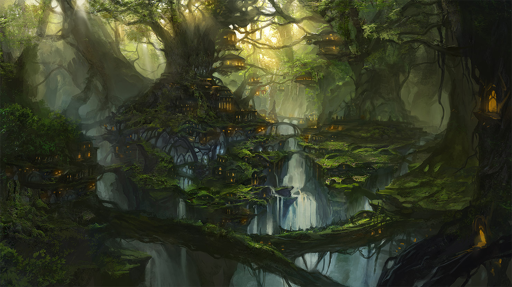
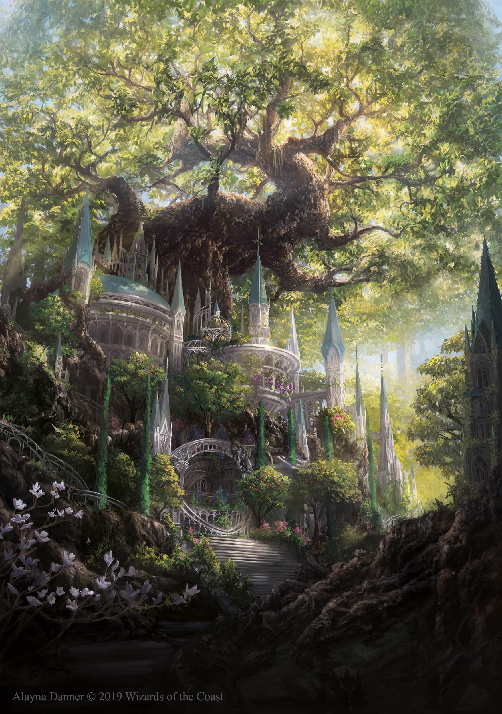

🌿 Земли эльфов "Мелорн"
Закрытая территория

Население: Неизвестно
Правитель: Король Энелиэ и королева Татиэ
Основан: ...
Описание
Земли эльфов "Мелорн" - населены эльфами и магическими существами: феи, энты, дриады и многие другие долгоживущие существа.

История
О ВЕЛИКОМ ПЕРЕСЕЛЕНИИ ЭЛЬФОВ
Из древних книг и преданий, что хранят королевства людей, известно: эльфы испокон веков населяли большую часть континента Лэстрэл. Их долголетие позволяло им быть свидетелями смены веков, а память хранила имена рек, что давно пересохли, и лесов, что обратились в прах.
Но пришли люди. Сначала их было немного, затем всё больше — новые поселения, пашни, города. Люди плодились быстро и жили ярко, и их экспансия была неудержима, как весенний паводок. Когда стало ясно, что людям больше некуда отступать, эльфы решили сформировать своё королевство — не из гордыни, а из желания сохранить хотя бы малую часть утраченного.
Так началось Великое Переселение. Эльфы покидали равнины и долины, уходили от берегов древних рек и двигались на восток — за горный хребет Дурин. Горы были высоки и суровы, перевалы опасны даже для опытных путников, но выбора не осталось.
За хребтом они основали государство Мелорн — последний оплот эльфийского народа. И совершили великое волшебство: воздвигли стену из живых деревьев. Не каменную, не железную — живую. Деревья растут быстро, но не старятся, их корни сплетаются в непроходимую чащу. Стена дышит, шелестит листвой и медленно расширяется, словно сам лес решил стать границей.
С тех пор Мелорн закрыт для всех, кроме эльфов. Лишь несколько торговых путей остались открытыми, известные лишь немногим.
Говорят, стена из живых деревьев помнит каждый шаг эльфийского народа. Говорят, она плачет смолой в годовщину Переселения. И говорят, что в самом сердце Мелорна растёт Первое Дерево — то самое, у которого эльфы поклялись, что больше никогда не отступят.
Достопримечательности
- Великое древо
- ...?